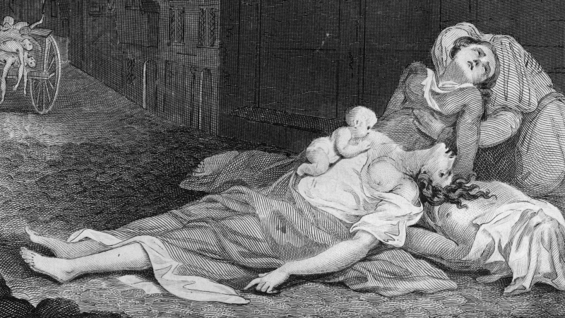
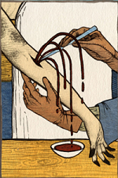

Great Plague of London

1665-1666
Reasons
- It began in the parish of Saint Charles, outside of London's Walls
- It was a hot spring
- Transmitted by trading with Asia
- Yersinia pestis bacterium transmitted through fleas
Symptoms
- Body covered with painful buboes
- Fever
- Coughing blood
- A man would die within days
London
- The poorest areas had rubbish littering in the streets
- King Charles II, merchants, lawyers, doctors, the parliament and rich people left London
- Lord Mayor and aldermen closed the gates of London
- Certificate to left London
- Quarantine
- 7000 people died per week
Strange cures
- Live in sewers=>the air outside was ill
- Pressing a chicken's rump against the plague-sores=>Heat
- Bloodletting=>Purifing the body

- Treacle
Art
Some people claim the nursery rhyme is about the plague
Ring-a-ring o' roses,
A pocket full of posies,
A-tishoo! A-tishoo!
We all fall down.
End of the Plague
- Winter, spread of disease slowed down
- People return to London in February 1666
- Great Fire of London, that killed rats and fleas
Consequences
- Economy slowed down
- More poverty=>Pillage
- Even the worst-affected towns recovered quickly